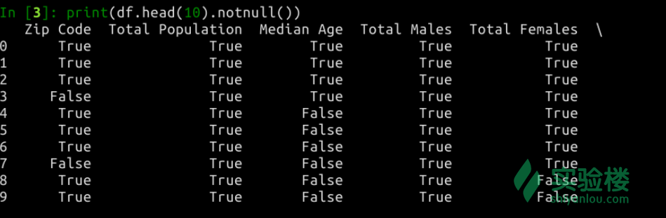
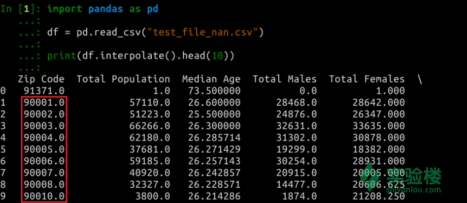
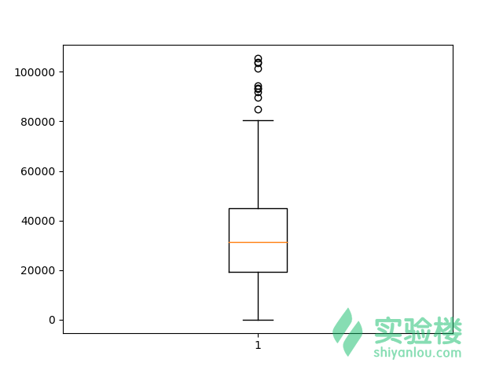

本实验为实验楼训练营课程 《Python 数据分析入门与进阶》的第四节，在该章节中我们将对数据做进一步的认识。
很多人认为数据分析就是将数据可视化或者对数据趋势做出预测，其实是不准确的。一个完整的数据分析流程大致应分为三步：收集数据、处理数据、数据趋势预测及可视化。而在实际工作中，前两项内容占据的时间远远超过最后一步。
收集数据虽然不是本课程的主要内容，但确实是数据分析的基础。没有数据，何谈数据分析。一般情况下，我们主要通过三种途径得到数据：
1. 数据接口
如果你想分析某一地区的历史天气变化趋势，那么你可以通过寻找一些天气信息网站来得到数据。例如中央气象台气象数据中心。这些网站提供了共开发者使用的数据接口，注册完成之后，通过相应的 api 请求方式就能获取到你想要的历史天气数据。
通过数据接口获取数据往往是一种非常高效的数据获取方式。因为你得到的数据，一般情况下会非常规范、完整。这极大地方便了后期数据处理工作。
3. 数据库
除了通过网络数据接口获取到数据，还有一种非常常见的情况，那就是直接从数据库读取数据。这种方式要求的前提条件较高，因为要求对方授权你直接读取数据库。
一些大型的互联网公司会拥有庞大的用户基数，这些用户每天会产生海量的数据。同样，一些工业公司在生产运转过程中，也会生成大量的设备和人员数据。如果你要针对这些公司的数据进行分析，直接读取数据库将是最便捷的方式。
2. 数据爬虫
除了上述的两种数据获取方式。我们还有一种重要的数据获取手段，那就是数据爬虫。如果你既没有数据库权限，又拿不到网络数据接口，数据爬虫可能是你最后的手段。
我们经常在网上看到一些有趣的数据分析实例，比如一线城市租房信息分析、知乎用户情绪分析等。面对这类数据分析问题，你应该是无法从知乎或者某一租房网站拿到原始数据信息的。这时候，你就可以通过数据爬虫去获取这些数据。
数据爬虫的优势在于，你无需数据拥有者提供权限。其缺点也非常明显，那就是获取到的数据特征有限，往往会有更多丢失或错误数据。除此之外，目前各大网站的反爬虫机制也越发完善，通过数据爬虫有时并不能获得足够的数据用于分析。
关于数据爬虫，可以学习实验楼课程 相关课程。
下面内容可能会使用到一些演示用例，请先使用终端下载相关文件：
# 下载
wget http://labfile.oss.aliyuncs.com/courses/764/data04.zip
# 解压
unzip data04.zip
# 该压缩包包含有下列文件
- one_hot_demo.csv
- test_file.csv
- test_file_nan.csv
- test_file.txt
- test_file.xlsx
在读取数据时，我们最常碰到的有两种形式：数据文件和数据库。下面，我们就来看一看常用读取数据的方法。
数据文件，即通常我们最常见到的有 .csv，.txt，少见有 .xlsx 格式的文件。
对于本地存在的 .csv，.txt 数据文件，首先可以用到第一节提到的 open() 方法。
# 读取 csv/txt 文件
file = open("test_file.csv", "r")
for line in file:
print (line)
对于 excel 支持的 .xlsx 文件就无法直接通过 open读取了。需要xlrd包：
sudo pip install xlrd #python2的安装方法
sudo pip3 install xlrd #python3的安装方法
import xlrd
# 打开文件
file = xlrd.open_workbook("test_file.xlsx")
# 按索引读取表
table = file.sheet_by_index(0)
# 读取每行并打印
for i in range(table.nrows):
print(table.row_values(i))
你会发现，open方法的局限性很多。所以，我们大多数情况下都会数据数据预处理神器 Pandas 来完成数据文件读取工作。
使用 Pandas 读取文件时，支持的文件格式非常多。例如csv文件：
import pandas as pd
df = pd.read_csv("test_file.csv")
print(df)
使用 Pandas 读取文件方便，代码简洁。最关键的是，读取出来的数据直接就是 DataFrame。上一节中，我们已经学习了对 DataFrame的各种操作，深知其强大之处。
除了csv文件，pandas 读取其他文件的方法如下：
import pandas as pd
# JSON 文件
pd.read_json
# HTML 文件
pd.read_html
# 本地剪切板
pd.read_clipboard
# MS Excel 文件
pd.read_excel
# HDF5Format 文件
pd.read_hdf
# Feather 格式
pd.read_feather
#Msgpack
pd.read_msgpack
# Stata
pd.read_stata
# SAS
pd.read_sas
# Python Pickle 格式
pd.read_pickle
# SQL 数据库
pd.read_sql
# Google Big Query
pd.read_gbq
对于 Pandas 读取数据方法，还带有很多参数。当然，每种方法带有的参数都不太一样，这里我们针对较为常见的 txt格式文件举例：
import pandas as pd
df = pd.read_table("test_file.txt", header=0, sep='\t')
print(df)
这里，header=0 表示将第一行设为表头，而 sep='\t'则代表使用空格分隔字段。
除此之外，关键 Pandas 更多的操作，可以阅读官方文档中文件读写章节。
除了数据文件，如果想要读取 MySQL，Oracle，Microsoft SQL 等数据库里面的数据。一般情况下都需要安装相应的第三方库。例如，读取 MySQL 时，我们需要安装 MySQLdb：
sudo apt-get install python-dev libmysqlclient-dev
sudo pip install MySQL-python
实验楼在线环境已经预置了 MySQL，我们启动 MySQL服务：
sudo service mysql start
然后使用root用户登陆，密码为空：
mysql -u root
此时，终端命令行变为 mysql> 开头。为了方便后面读取数据，我们先要向数据库写入一些示例数据：
# 创建名为 shiyanlou 的数据库
mysql> CREATE DATABASE shiyanlou;
Query OK, 1 row affected (0.00 sec)
# 切换到该库
mysql> use shiyanlou
Database changed
# 创建名为 person 的表
mysql> CREATE TABLE person (id int(10),name char(20),phone int(12));
Query OK, 0 rows affected (0.07 sec)
# 写入示例数据1
mysql> INSERT INTO person VALUES(01,'Tom',110110110);
Query OK, 1 row affected (0.02 sec)
# 写入示例数据2
mysql> INSERT INTO person VALUES(02,'Jack',119119119);
Query OK, 1 row affected (0.01 sec)
# 写入示例数据3
mysql> INSERT INTO person VALUES(03,'Rose',112222119);
Query OK, 1 row affected (0.04 sec)
接下来，通过 MySQLdb 连接并读取数据。重新打开一个终端，由于MySQLdb 目前不支持本课程默认的 Python 3环境，所以我们需要切换到 Python 2环境。
# 切换到 Python2 环境
shiyanlou:~/ $ python2
>>> import MySQLdb
# 连接数据库
>>> db = MySQLdb.connect(host="localhost", user="root", passwd="", db="shiyanlou")
# 获取操作游标
>>> cur = db.cursor()
# 使用 execute 方法执行 SQL 查询语句
>>> cur.execute("SELECT * FROM person")
3L
# 输出查询
>>> for row in cur.fetchall():
... print row # 注意缩进
...
(1L, 'Tom', 110110110L)
(2L, 'Jack', 119119119L)
(3L, 'Rose', 112222119L)
# 关闭数据库连接
>>> db.close()
数据读取成功
不同的数据分析任务往往接触到的是不同类型的数据。一般情况下，占比最高的是数值型数据，例如各类报表。当然，针对自然语言处理时，我们拿到的都是文本数据。除此之外，针对音频图像处理时，我们拿到的是相应类型的音频和图像数据。针对这些数据分析时，我们会涉及到大量的数据转换。例如，将图像数据转换为数值矩阵，对字符串数据进行数字编码等。这些，我们接下来都会涉及到。
当你接触到一个大部分由数组组成的数据集时，最快的认识它的方式是什么？
一般来讲，我们先浏览前几行。看看数据表的列名，每一列是数据还是文本。然后，我们可能想知道每一列数据的统计信息，例如：中位数、平均数等。
针对这样的情况，Pandas 为我们提供了相应的函数。通过这些函数方法，我们可以很方便地概览数据。
head() 和tail()方法可以帮助我们只预览数据集开头或结尾的一部分数据。例如：
import pandas as pd
df = pd.read_csv("test_file.csv")
# 浏览头部数据
df.head()
# 浏览尾部数据
df.tail()
不带参数的head() 和 tail()方法默认显示 5 条数据，你也可以自定义显示条数。
import pandas as pd
df = pd.read_csv("test_file.csv")
# 浏览头部 10 条数据
df.head(10)
describe()方法可以对数据集中的数值进行统计，会输出数据计数、最大值、最小值等。
import pandas as pd
df = pd.read_csv("test_file.csv")
# 数据统计
df.describe()
count() 方法可以用于计算数据集中非空数据的数量：
import pandas as pd
df = pd.read_csv("test_file.csv")
# 数据统计
df.count()
可以看出，我们的测试数据集中没有空数据。
对数据集有了大致印象之后，我们首先要做一些针对数据的预处理工作。其中，缺失值往往是我们最先面临的问题。
缺失值是指数据集中的某一些行或列出现数值丢失。造成这种现象的原因，有可能是数据没有采集成功，或者是因为传输、存储出现故障。
针对缺失值的处理，第一步应该是「如何找出缺失值？」
查找缺失值，我们依旧可以使用 Pandas 进行处理。Pandas 中，缺失数据一般采用NaN标记NaN 代表 Not a Number。特别地，在时间序列里，时间戳的丢失采用 NaT 标记。我们可以看一下：
import pandas as pd
df = pd.read_csv("test_file_nan.csv")
print(df.head(10))
我们可以看到数据集中存在的一些缺失值。
Pandas 用于检测缺失值主要用到两个方法，分别是：isnull() 和 notnull()，故名思意就是「是缺失值」和「不是缺失值」。默认会返回布尔值用于判断。
print(df.head(10).isnull())
print(df.head(10).notnull())

好了，既然我们能找出缺失值，接下来就是对缺失值进行处理了。关于缺失值处理，主要有两种处理手段：删除缺失值所在的行或列或填充缺失值。
删除缺失值是最简单直接的办法之一。它适用于三种情况：
缺失值少，对数据集的影响可以忽略不计。这句话的意思应该很好理解。比如一个数万行的数据集，恰好有某几行缺失了几个特征值。缺失的数据行远远小于全部数据的数量，且删除这几行之后，对原数据集的影响可以忽略。这时候，直接删除缺失值所在的行是最好的。
缺失数据量大，已无法挽救。举个例子，一个数据集有1 万行，存在 10 个特征列。其中某一项特征所在的列存在 9000个空值。这也就表明该列存在的意义已经不大了。所以也需要删除数据。
test_file.csv 数据集距离。该数据集实际为洛杉矶人口普查数据。我们可以看到数据集中有一列为 Zip Code，也就是邮编。邮编是客观存在的，也是不能随意更改的。如果某几项邮编缺失，你是无法随意通过一些数值来填充邮编。所以，对应这样的数据行已经没有意义，选择直接删除往往是最好的。删除缺失值所在的列或行非常简单，使用Pandas提供的 dropna() 方法。dropna() 方法可以将有缺失值的行或列全部移除。当然，你可以使用 axis=0 参数指定行，或 axis=1参数指定列。试一试：
import pandas as pd
df = pd.read_csv("test_file_nan.csv")
print(df.dropna(axis=0))
原数据集有 319行，7列。
删除含有缺失值的行之后，还剩下291 行，7列：
print(df.dropna(axis=1))
删除有缺失值列之后，只剩下索引了。因为原数据集每一列均有空值。所以，删除列操作要慎用。
除了删除缺失值，对缺失值处理的另外一种方法就是填充缺失值。如果你第一次接触缺失值处理，你可能会认为填充缺失值的处理好于直接删除缺失值。其实并不一定，原因在于填充缺失值会直接改变原有数据集，这可能会影响后续预测分析的结果。所以，使用填充缺失值时一定要更加谨慎。
一般情况下，填充缺失值有三种方法。
1. 手动填充。手动填充虽然是笨办法，但往往是效果最好的方法。手动填充非常适合于一种情形，那就是数据可以被人为有效确定。举个例子：上面的洛杉矶人口普查数据表中，第一列为邮编，它用于标记不同的地区。如果邮编有几项数据缺失，那么通过手动筛选再填充邮编就是最适合的方法。原因在于，邮编和其他数据不一样，如果它不存在或不正确，就直接导致这行数据无效，甚至影响到其他数据。手动填充，充分展现了人的灵活性，但同样是一个费时费力的办法。
2. 临近填充。 临近填充，故名思意就是采用与缺失值相邻的数据进行填充缺失值的方法。临近填充比较适合于零散的不确定数据。零散，指的是不会连续缺失数十个或上百个数据值。如果连续缺失的值太多，你用临近填充将其变为同一数据值，这对数据集整体的影响可想而知。不确定数据，就是通过视觉观察，无法发现相邻数据之间有什么联系，前后数据时大时小，无法被人为确定或找出规律。
Pandas 提供了用于临近填充的fillna()方法。该方法的使用示例如下：
import pandas as pd
df = pd.read_csv("test_file_nan.csv")
print(df.head(10).fillna(method='pad'))
我们可以对照缺失值数据，看到其被前面的临近值进行了填充。
我们也可以更换 method='bfill' 参数，使用后面的临近值进行填充。
print(df.head(10).fillna(method='bfill'))
这里因为最后一项为缺失数据，所以有一部分缺失值无法被有效填充。
这里你也注意到，我们的数据其实有 200 多行，第三列的 4-9 行应该能被填充，但为什么还是 NaN ？这是因为，fillna()方法在填充时并不会影响原有数据集。
除了临近填充，有事我们还会用mean()进行平均值填充。
3. 插值填充。插值填充就是采用数学的方法对数据进行插值。举个例子，有一列数据为 [2011, 2012, 2013, 缺失值, 缺失值, 2016, 2017] 。这里，无论你采用向前还是向后填充，其实都不是最好的。你可以发现数据是一个等差数列，缺失值应该分别为[2014, 2015]，这也就是一个线性插值的过程。
Pandas 提供了相关插值方法，通过interpolate()方法实现。默认为参数为线性插值，即 method='linear'。举例：
import pandas as pd
df = pd.read_csv("test_file_nan.csv")
print(df.interpolate().head(10))
注意线性插值结果与前面临近插值结果的区别，第一列明显要好很多。

除此之外，interpolate()方法还有{‘linear’, ‘time’, ‘index’, ‘values’, ‘nearest’, ‘zero’, ‘slinear’, ‘quadratic’, ‘cubic’, ‘barycentric’, ‘krogh’, ‘polynomial’, ‘spline’, ‘piecewise_polynomial’, ‘from_derivatives’, ‘pchip’, ‘akima’}等插值方法可供选择。
method='quadratic'二次插值。method='pchip'。method='akima'。method='akima'，method='barycentric' 和 method='pchip' 需要 Scipy 才能使用。在对数据的预处理过程中，我们会遇到有一些特征列中的样本并不是连续存在的，而是以分类形式存在的情况。例如，某一装置的状态有三种情况，分别为：正常、机械故障、电路故障。如果我们要将这些数据运用到后续的预测分析中，就需要对文字状态进行转换。一般情况下，可以用 0 表示正常，1 代表机械故障，2 代表电路故障。
但是这种映射方式，往往会让学习器认为 2 代表电路故障比 1 代表机械故障更「大」，从而影响模型分析结果，这肯定是不行的。
所以，对于以分类形式存在的特征变量，我们会采用一种叫独热编码（One-Hot Encoding）的方式将其转换成二元特征编码，进一步对特征进行了稀疏处理。独热编码采用位状态寄存器来对个状态进行编码，每个状态都由他独立的寄存器位，并且在任意时候只有一位有效。举例如下：
Pandas 提供了更简单的方法来处理以分类形式的变量。我们可以通过 get_dummies() 将以分类形式存在的变量转换为独热编码。
import pandas as pd
df = pd.read_csv("one_hot_demo.csv", header=0)
在此演示文件中，status 共有 none, electric, engine三类数值。color 有red 和 green两类。
oneHot = pd.get_dummies(df[['status', 'color']])
oneHot.head(10)
我们可以看到，字符串被进行了独热编码，特征也从原先的 2 列拓充为 5 列。所以，独热编码的好处多多。
数据集中包含大量的重复数据也是数据预处理会经常面临的状况。接下来，我们来看一看 Pandas 提供了哪些用于处理重复数据的方法。
pandas.DataFrame.duplicated() 可以用来标识重复数据，数据集中重复数据行会返回布尔类型 True。上面的独热编码示例数据集中存在大量重复数据，我们就拿它举例：
import pandas as pd
df = pd.read_csv("one_hot_demo.csv", header=0)
print(pd.DataFrame.duplicated(df).head(10))
我们可以看到，前 10 行数据中，就有 5 行为重复数据。当然这个是完整数据集的比对结果，这里只是显示了前 10 行。
pandas.DataFrame.drop_duplicates()可以返回一个去重后的数据集。
import pandas as pd
df = pd.read_csv("one_hot_demo.csv", header=0)
print(pd.DataFrame.drop_duplicates(df))
去重后的数据集如下，仅有 6 行非重复项。
除了缺失值与重复值，在处理数值型数据时，我们还容易遇到一种状况，那就是异常值。异常值检测是处理数值型数据过程中必须重视的一项工作。那些在收集、录入过程中产生的异常数据，如果不及时剔除，很可能对后续的预测分析带来严重不良影响。
应用数学和统计学领域对异常值检测研究比较深入，目前存在的检测方法也非常多。大致来讲，有从概率方法入手的一元正态分布及多元高斯方法，还有通过矩阵分解和神经网络进行异常值检测的相关方法。
在这里，我们介绍一种简单直观的异常值检测方法，那就是通过箱形图（箱线图）来识别异常数据。箱形图是用来观测数据集分布的一种图形类型。箱形图中，从上到下依次有 6 个数据节点，分别是上界、上四分位、均值、中位数、下四分位、下界。而那些超过上界的值就会被标记为离群点，也就是异常数据。
下面我们使用上一节提到的洛杉矶人口数据进行箱形图绘制。
from matplotlib import pyplot as plt
import pandas as pd
data = pd.read_csv("test_file.csv", header=0)
Total_Population = data["Total Population"]
plt.boxplot(Total_Population)
plt.show()

我们可以将离群点标记并导出：
from matplotlib import pyplot as plt
import pandas as pd
data = pd.read_csv("test_file.csv", header=0)
Total_Population = data["Total Population"]
P = plt.boxplot(Total_Population)
outlier = P['fliers'][0].get_ydata()
print(outlier)
其实，DataFrame 带有 boxplot() 方法可以很方便地将所有列数据的箱形图画在一张图中对比：
from matplotlib import pyplot as plt
import pandas as pd
data = pd.read_csv("test_file.csv", header=0)
data.boxplot()
plt.show()
本章，我们主要涉及到的是一些数据预处理的方法。但是，在数据分析的过程中，很多人陷入了一个误区，那就是只停留在会使用一些工具和方法，并没有去思考什么适合该用什么样的处理方法。同样的数据，在不同的人手中会得到一些不一样的结论。而深入思考 + 广泛实践，才能训练出你对数据的敏感性，才能在数据分析的道路上走的更远。